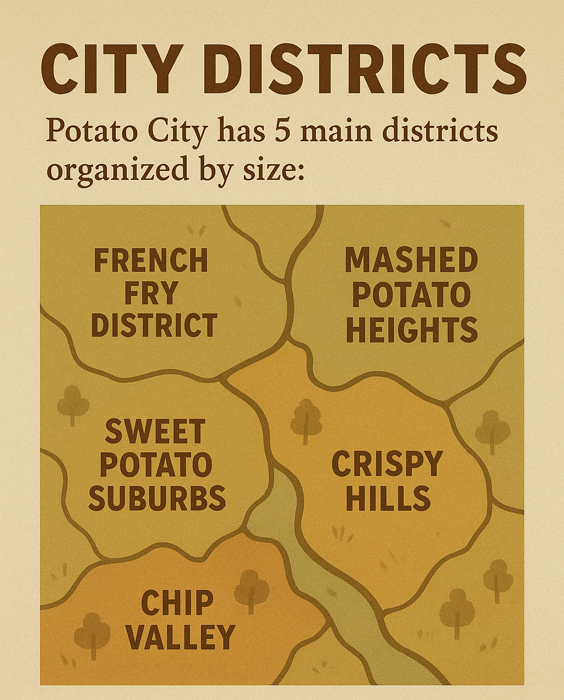

Potato City Information
About Our Community
City Districts
Potato City has 5 main districts organized by size:
- French Fry District
- Mashed Potato Heights
- Sweet Potato Suburbs
- Chip Valley
- Crispy Hills

Popular Activities
Things to do in Potato City:
- Visit the Underground Museum
- Attend the Harvest Festival
- Walk in Sprouting Gardens
- Shop at Root Cellar Mall
- Watch movies at Tuber Theater
Schools
Educational institutions in our city:
- Potato Elementary School
- Fries Middle School
- Yukon High School
Back to News |
Check our Local Prices |
Contact Us